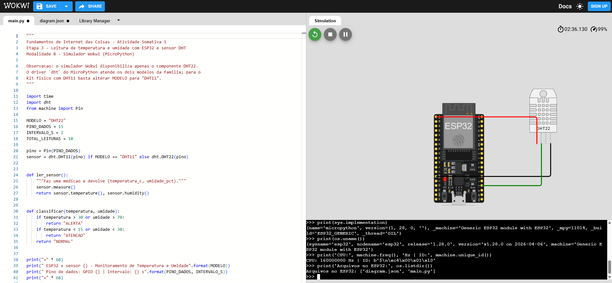

Atividade Somativa 1 — Etapa 1: Preparação do ambiente
Aluno: Matheus RodriguesModalidade: B — SimuladorData: 28/08/2026
1. Ambiente escolhido
A atividade foi desenvolvida na Modalidade B, utilizando o
Wokwi Simulator (wokwi.com), ambiente de simulação executado no
navegador que reproduz fielmente o comportamento do microcontrolador ESP32 e de sensores
digitais de temperatura e umidade da família DHT. O simulador executa o firmware
MicroPython real compilado para a arquitetura Xtensa do ESP32, o que permite rodar
exatamente o mesmo código-fonte que seria gravado em uma placa física.
2. Recursos preparados
Item
Configuração
Ferramenta de desenvolvimento
Wokwi Simulator (versão web, acesso em 28/08/2026)
Microcontrolador simulado
ESP32 DevKit-C V4 (Generic ESP32 module)
Linguagem
MicroPython
Firmware
MicroPython v1.28.0 (2026-04-06)
Sensor
Sensor digital DHT de temperatura e umidade
Editor de código
Editor integrado do Wokwi, arquivo main.py
Console
Serial Monitor com REPL do MicroPython integrado
3. Procedimento realizado
Acesso ao endereço wokwi.com e criação de um novo projeto com o template
MicroPython on ESP32.
Abertura do arquivo main.py, onde é escrito o programa em MicroPython.
Abertura do arquivo diagram.json, responsável pela descrição do circuito
(placa, sensor e ligações elétricas).
Verificação da disponibilidade do painel de simulação, com os controles de
iniciar, pausar e reiniciar a execução, e do Serial Monitor.
4. Evidência

Figura 1 — Ambiente de desenvolvimento Wokwi Simulator preparado: à esquerda o editor
com o arquivo main.py e as abas diagram.json e Library Manager;
à direita o circuito com o ESP32 e o sensor DHT, além do painel de simulação e do
Serial Monitor.
Observação: por se tratar de ambiente de simulação (Modalidade B), não há
instalação local de drivers USB-serial nem de IDE, uma vez que todo o fluxo de edição,
compilação e execução ocorre no próprio navegador. O ambiente encontra-se apto à
realização das Etapas 2 e 3.